Toepads are modified pads on the tips of the toes and fingers of many species of Asterophryinae frogs that help with clinging. Arboreal species have the most developed and largest toepads, whil some species (particularly fossorial or burrowing species) may have hardly and visible toepad.
Here are some photos that we took under a dissecting scope and 32x and with 6x magnification by the camera.
Austrochaperina (semi-aquatic)
Austrochaperina palmipes
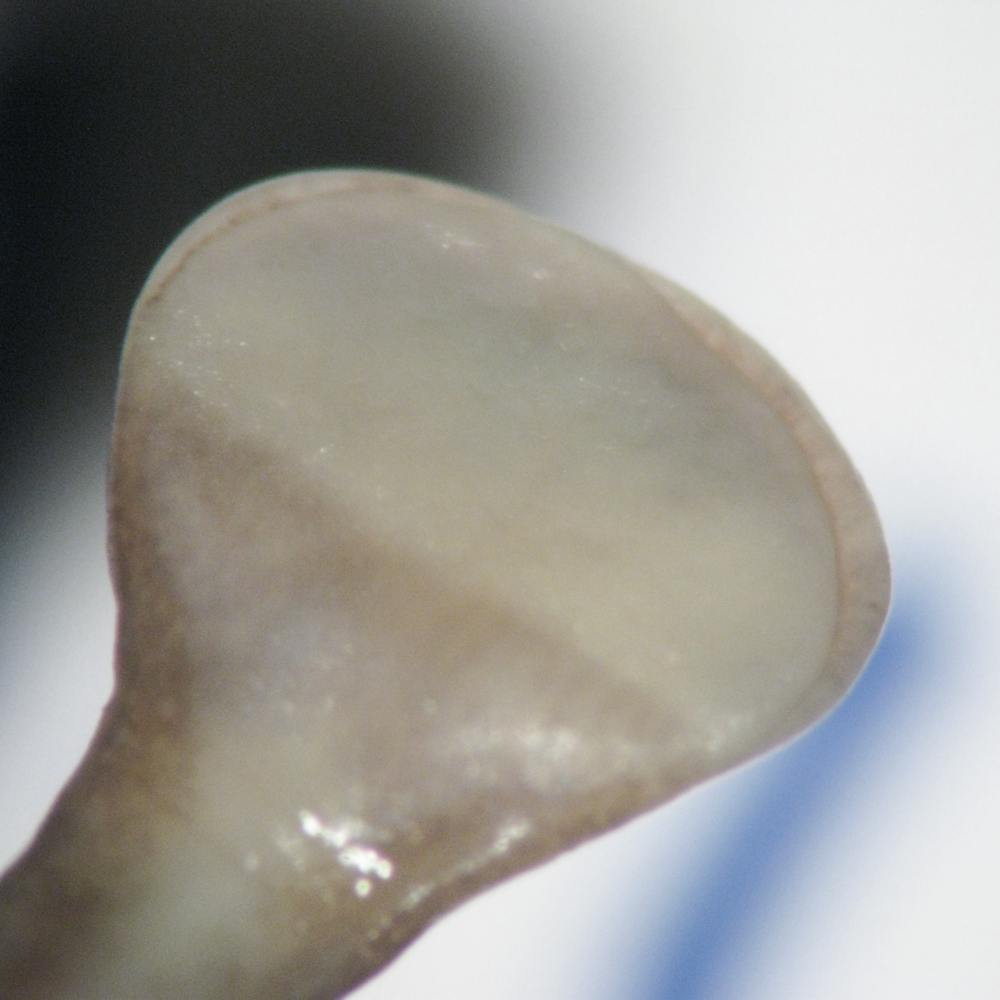
Finger pad
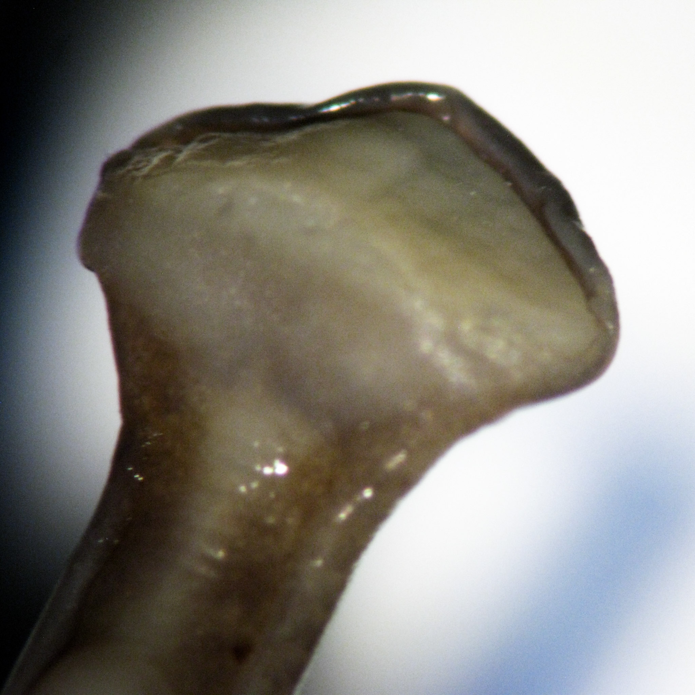
Toe pad
Figure 1: Toepads of a semi-aquatic species with well-developed toepads. It is from Buyetai, Normanby Island, PNG.
Choerophryne (scansorial)
(a) Choerophryne sp. 2 “fast clicker”
(b) Finger pad
(c) Toe pad
Figure 2: Toepads of a scansorial species with well-developed toepads. Many arboreal and scansorial species have larger finger pads than toe pads. It is from Cliffside camp, Kamiali on the EPCT of the mainland.
Cophixalus
Cophixalus desticans (terrestrial)
Cophixalus desticans
Finger pad
Toe pad
Figure 3: Toepads of a small terrestrial species with not well-developed toepads. It is from Buyetai, Normanby Island, PNG.
Cophixalus verrucosus (scansorial)
Cophixalus verrucosus (a)
Finger pad
Toe pad
Cophixalus verrucosus (b)
Figure 4: Toepads of a scansorial species with clear toepads. Though the same genus as Cophixalus desticans, it has a very different lifestyle, requiring well-developed toepads. Species vary in coloration, as presented. It is from Buyetai, Normanby Island, PNG.
Cophixalus cheesmanae (scansorial)
Cophixalus cheesmanae
(a) Finger pad
(b) Toe pad
Figure 5: Cophixalus cheesemanae is a scansorial Cophixalus often found on palms and even banana fronds. It is a good climber. From Cliffside camp, Kamiali, mainland Papua New Guinea.
Oreophryne (arboreal)
Oreophryne B penelopia
Oreophryne B penelopia
Finger pad
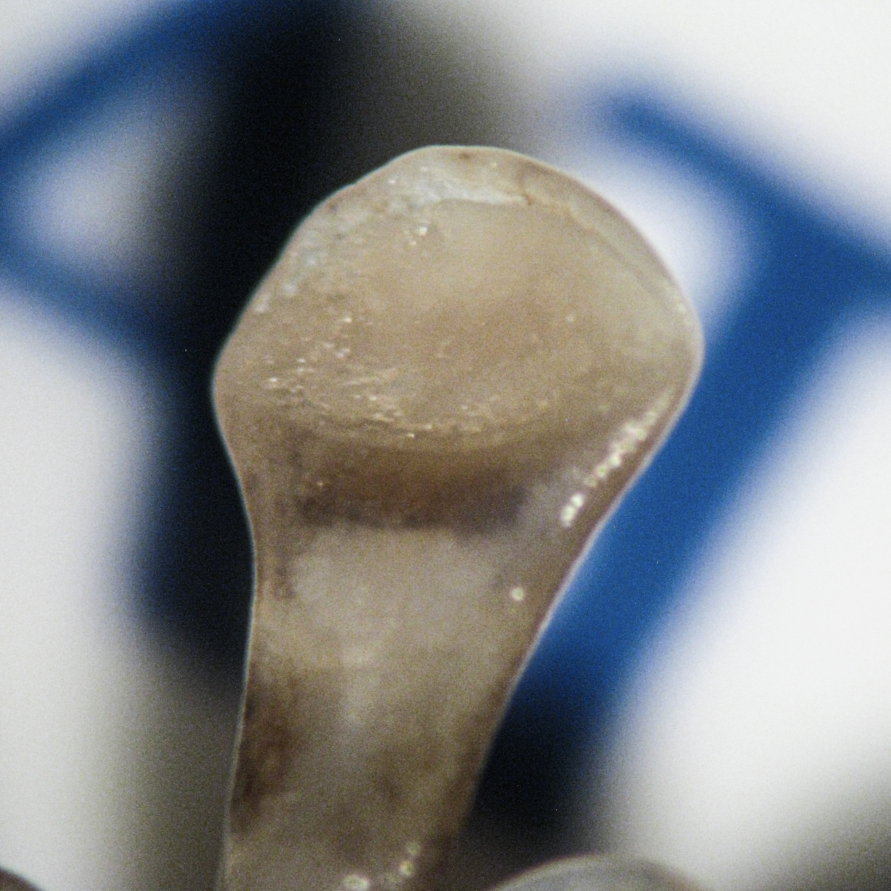
Toe pad
Figure 6: Toepads of a arboreal species with visibly large toepads from Buyetai, Normanby Island, PNG.
Oreophryne A loriae
Oreophryne A loriae
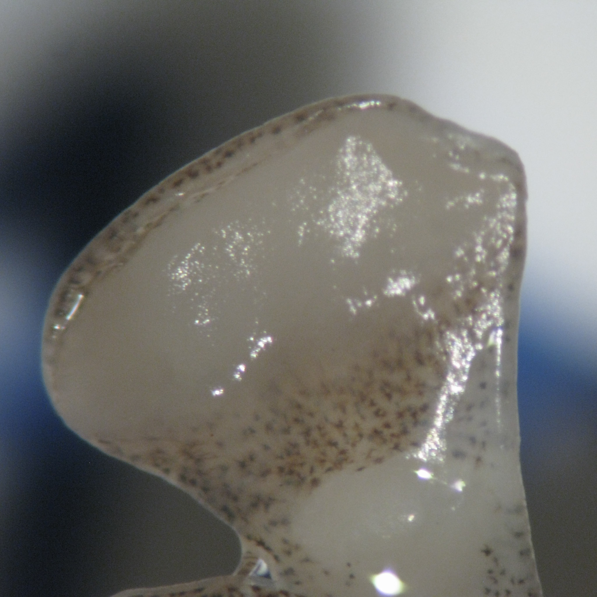
Finger pad
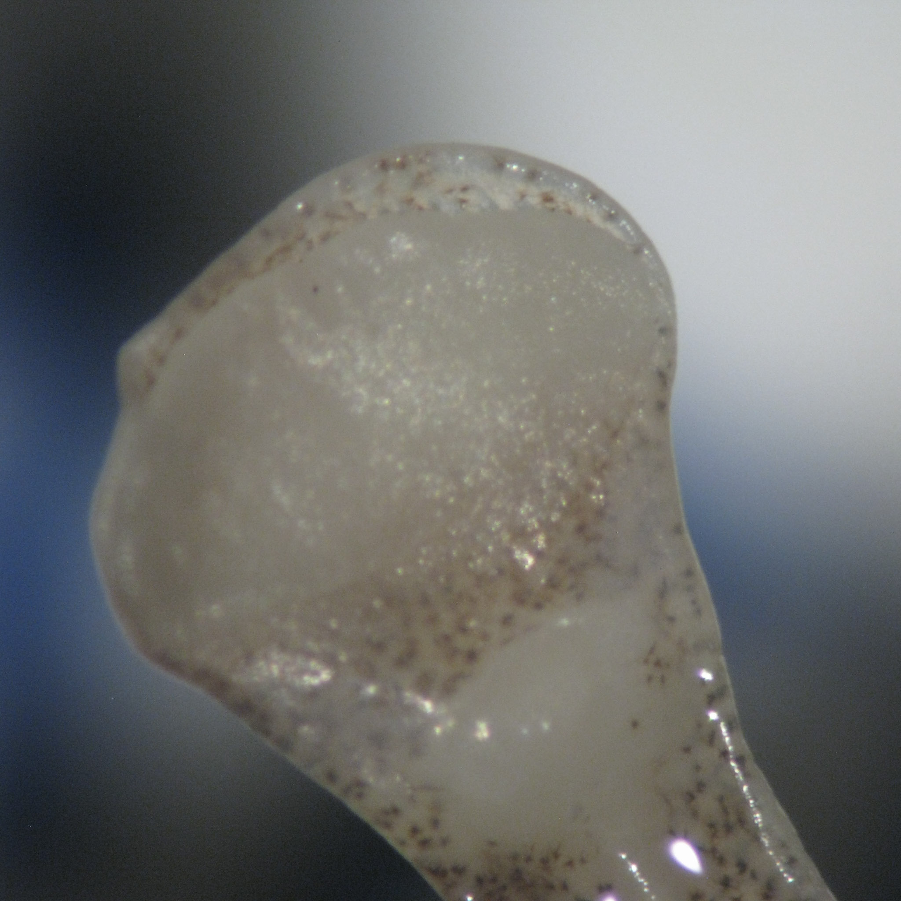
Toe pad
Figure 7: Toepads of a arboreal species with clear toepads outlined with dark, spotted tissue. It is from Maru Ruama (Mt. Gerebu, mainland Papua New Guinea).
Hylophorbus (terrestrial)
Hylophorbus cf. rufescens.1
Finger pad
Toe pad
Figure 8: Toepads of a terrestrial species from Buyetai, Normanby Island, PNG. This genus has hard to see toepads indicated by a dark gradient underlying the pad.
Liophryne (terrestrial)
Liophryne dentata
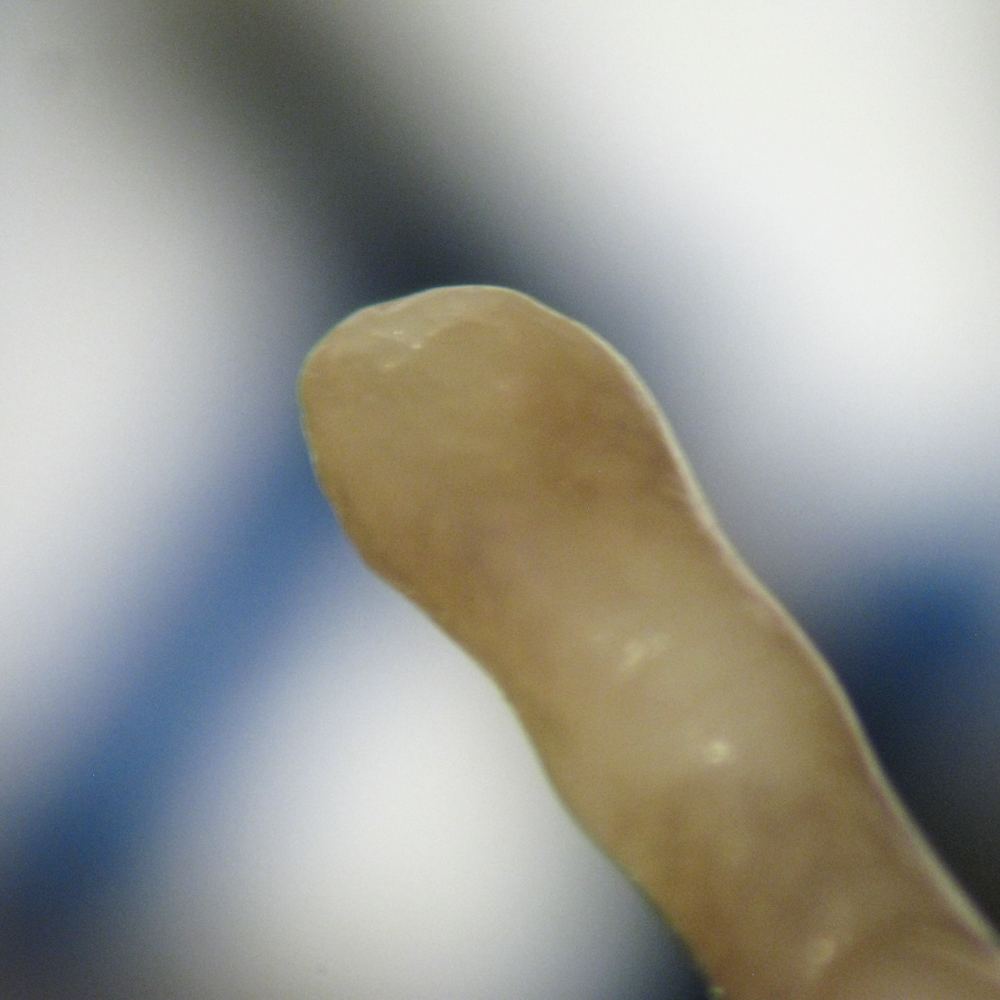
Finger pad
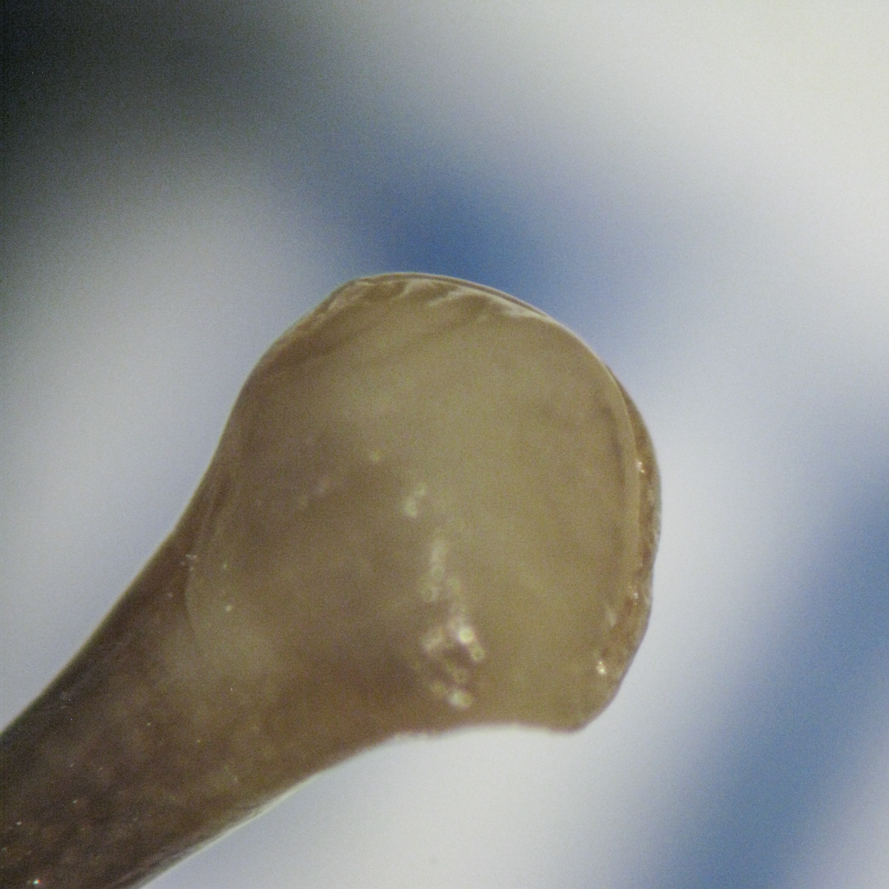
Toe pad
Figure 9: Toepads of a terrestrial species with obscure toepads. It is from Buyetai, Normanby Island, PNG.
Mantophryne (terrestrial)
Mantophryne cf. lateralis.1
Finger pad
Toe pad
Figure 10: Toepads of a terrestrial species with small toepads surfacing the edge of their digits, attributed to them balancing on the tips of their fingers and toes. It is from Buyetai, Normanby Island, PNG.
Copiula (terrestrial)
Copiula sp.5
Finger pad
Toe pad
Figure 11: Toepads of a terrestrial species with not well-developed toepads from Maru Ruama (Mt. Gerebu, mainland Papua New Guinea).
Paedophryne (terrestrial)
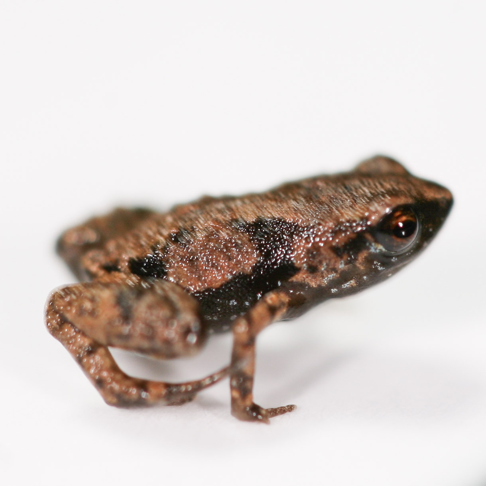
Paedophryne sp.1
Figure 12: Toepads of a tiny jumping terrestrial species with shortened fingers and toes. No obvious toepads that are from Maru Ruama (Mt. Gerebu, mainland Papua New Guinea).
Barygenys (fossorial)
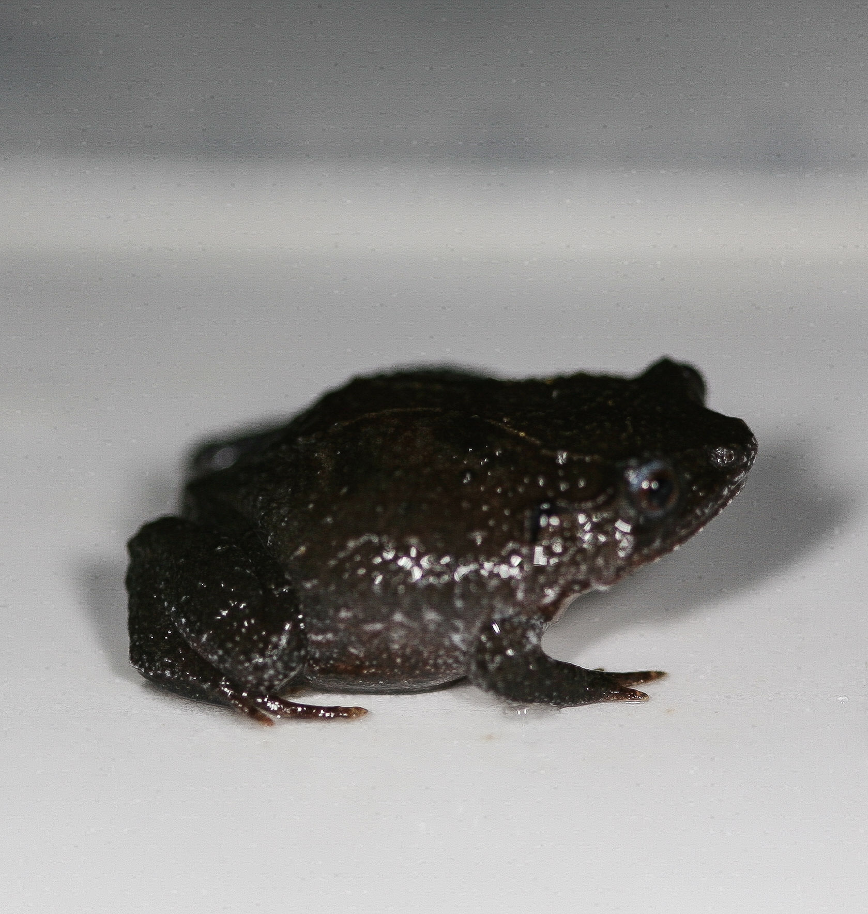
Barygenys sp.
(a) Finger pad
(b) Toe pad
Figure 13: Barygenys sp. is a small fossorial (burrowing) species. It is really hard to see toepads as this is a small species. The contrast has been adjusted here to see the slight difference in skin texture. From Cliffside camp, Kamiali.
Callulops (fossorial)
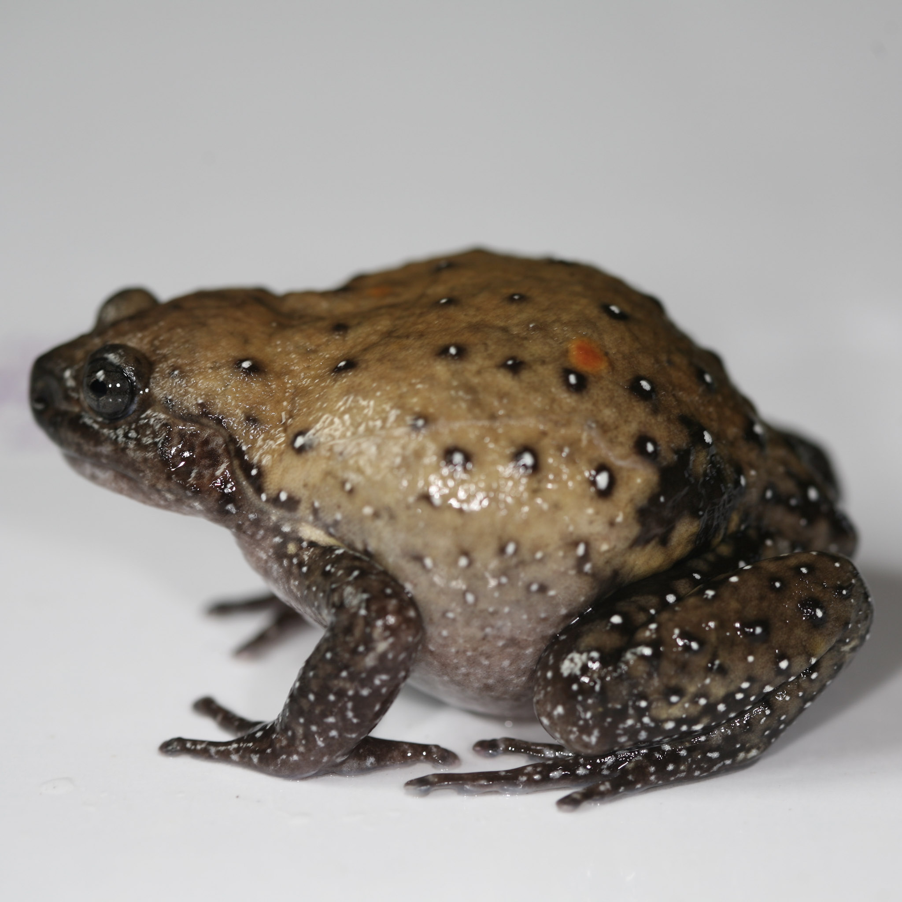
Callulops personatus
(a) Finger pad
(b) Toe pad
Figure 14: Callulops personatus is a large fossorial (burrowing) species. It is one of the largest of all Asterophryinae. It is hard to see toepads, there may be some modified skin that blends into the rest of the toe. From Cliffside camp, Kamiali.
Genyophryne (fossorial)
Genyophryne thomsoni
Finger pad
Toe pad
Figure 15: Toepads of a fossorial species with minimal toepads. It is from Buyetai, Normanby Island, PNG.
Xenorhina (fossorial)
Xenorhina sp.1
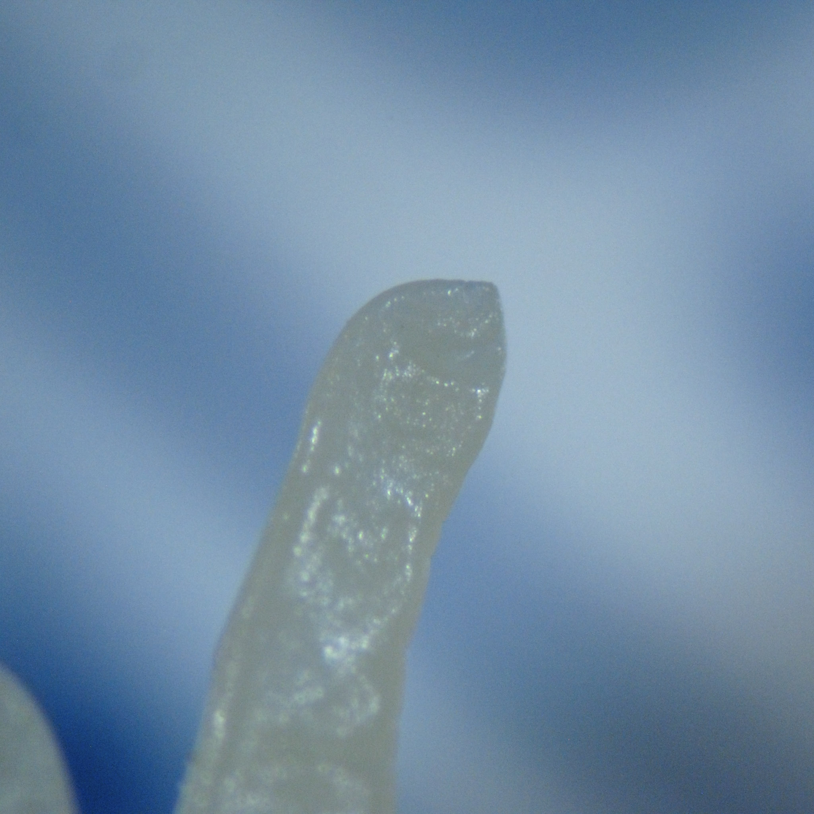
Finger pad
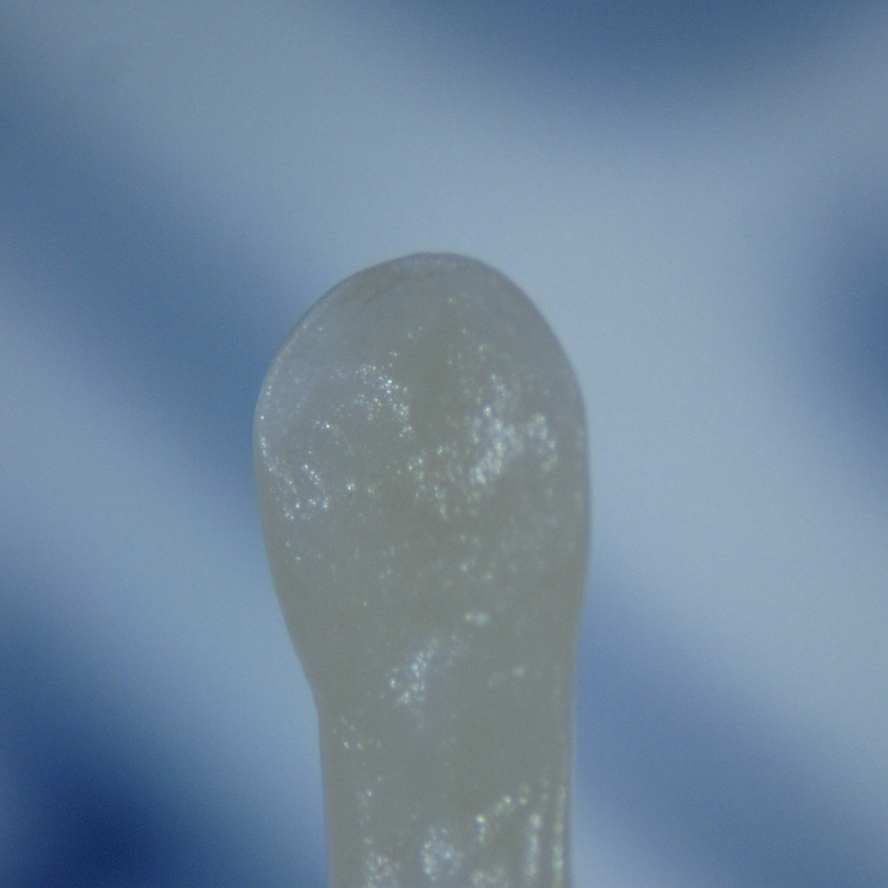
Toe pad
Figure 16: Toepads of a fossorial species with unclear toepads from Maru Ruama (Mt. Gerebu, mainland Papua New Guinea).